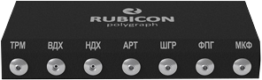
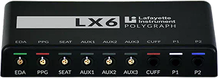
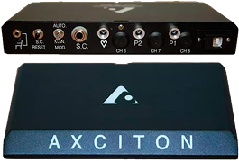

Про компанію «Червона лінія»
Професійні поліграфні перевірки, корпоративна безпека та об'єктивні розслідування для бізнесу і приватних клієнтів.
«Червона лінія» — команда фахівців із багаторічним досвідом проведення поліграфних досліджень. Ми допомагаємо компаніям запобігати внутрішнім загрозам, перевіряти персонал, розслідувати інциденти та ухвалювати обґрунтовані кадрові рішення. У своїй роботі ми поєднуємо сучасні методики тестування, конфіденційність і професійний підхід, щоб надавати клієнтам максимально достовірні результати.
Зв'язатися з нами
Експертиза
Наша команда
це дипломовані фахівці, які мають багаторічний практичний досвід у виявленні неправдивої інформації за допомогою комп'ютерного поліграфа (детектора брехні). Ми поєднуємо академічну підготовку, сучасні методики та високі етичні стандарти, щоб надавати замовникам точні, об'єктивні й зрозумілі результати.
Кожне дослідження проводиться з дотриманням професійних процедур, конфіденційності та індивідуального підходу до поставлених завдань. Наша мета — допомогти клієнтам отримати достовірну інформацію для ухвалення важливих кадрових, корпоративних і особистих рішень.
кваліфікація
Професійний розвиток
Для кожного співробітника «Червона лінія» обов'язкові:
-
Постійне навчання
Регулярні семінари, лекції та курси підвищення кваліфікації, що дозволяють підтримувати високий професійний рівень і впроваджувати сучасні підходи у практичній роботі.
-
Практичний аналіз кейсів
Внутрішні супервізії та розбір кейсів допомагають вдосконалювати навички, обмінюватися досвідом і знаходити оптимальні рішення для складних ситуацій.
-
Сучасні технології
Постійне оновлення знань з інструментарію й програмного забезпечення забезпечує точність досліджень та відповідність сучасним професійним стандартам.
Техніка
Професійне обладнання
-
Rubicon (UA)
01
Поліграф Rubicon - це сучасний український комплекс для проведення поліграфних досліджень, який поєднує точність вимірювань і передові технологічні рішення. Система обладнана високочутливими датчиками для контролю дихання, серцево-судинної активності та шкірно-гальванічних реакцій. Завдяки своїй надійності та функціональності прилад широко застосовується під час кадрових перевірок, службових розслідувань і оцінки достовірності інформації.

-
Lafayette (USA)
02
Поліграф Lafayette, вироблений у США, є одним із найвідоміших і найавторитетніших комп'ютерних детекторів брехні. Прилад оснащений високоточними сенсорами та сучасними програмними алгоритмами, які забезпечують детальний аналіз фізіологічних реакцій людини. Завдяки своїй надійності система успішно використовується для кадрових перевірок, внутрішніх розслідувань, служб безпеки та криміналістичних досліджень.

-
Axciton (USA)
03
Американський поліграф Axciton поєднує передові технології, стабільність роботи та високу точність реєстрації фізіологічних показників. Завдяки сучасній апаратній платформі та інтелектуальним алгоритмам обробки даних система забезпечує якісний аналіз отриманої інформації. Гнучкі налаштування тестування дозволяють адаптувати дослідження до різних завдань, тому Axciton широко використовується правоохоронними органами, службами безпеки та під час проведення приватних розслідувань.

Місце проведення
Де проводимо перевірки?
-
Наші офіси
Базове місце — спеціально облаштований кабінет, який відповідає вимогам до поліграф- досліджень: зручне крісло, контроль шуму/освітлення, стабільна температура, відсутність зовнішніх чинників, що відволікають
-
Виїзд до замовника
Якщо зупинка робочих процесів небажана або працівникам незручно відвідувати офіс поліграфолога, «Червона лінія» організує виїзне тестування безпосередньо на території замовника. Наш фахівець прибуде у погоджений час із необхідним обладнанням та забезпечить проведення перевірки в комфортних і конфіденційних умовах.
-
Географія
Основний регіон роботи — Київ та Київська область. Також проводимо перевірки у найбільших містах України, зокрема у Львові, Одесі, Дніпрі, Харкові та інших обласних центрах. За попередньою домовленістю наші фахівці можуть виїхати в будь-яке місто України, а також до будь-якої країни Європейського Союзу. Вартість виїзду та логістики розраховується індивідуально.
Процес
Як ми працюємо
-
Анонімність і конфіденційність
Усі замовники залишаються анонімними; інформація не передається третім особам без вашої згоди. Дані зберігаються захищено й обмежений час.
-
Добровільність і поінформована згода
Перевірка проводиться виключно за згодою, із поясненням мети, правил і можливих обмежень.
-
Етичні норми
Дотримуємося професійних стандартів, працюємо в межах чинного законодавства України, уникаємо дискримінаційних формулювань і питань, що не стосуються цілей перевірки.
-
Стандартизований процес
попередня консультація та визначення цілей;
інтерв'ю і підготовка запитань під ваш кейс;
калібрування обладнання;
проведення тесту за методикою;
аналітика й письмовий звіт із рекомендаціями.
напрями роботи
Для кого ми корисні
-
бізнесу
кадрові перевірки, комплаєнс, розслідування інцидентів, скринінг топ- менеджменту
-
приватним особам
особисті/сімейні питання, відновлення довіри, спірні ситуації
-
юридичним особам
досудові спори, верифікація свідчень, внутрішні аудити
Переваги
Чому «Червона лінія»?
-
Експертиза
Експерти з освітою та вузькопрофільним досвідом.
-
Обладнання
Сучасне, правильно налаштоване обладнання.
-
Прозорість
Прозорі умови співпраці, чіткі терміни й зрозумілі звіти.
-
Гнучкість
Гнучкі формати (офіс/виїзд), конфіденційність і персоналізований підхід.
Консультація
Потрібна консультація або прорахунок вартості ?
-
Консультація безкоштовна
-
Конфіденційність 100%
-
Відповідаємо швидко
Зв'яжіться з нами — підберемо оптимальний формат і підготуємо план перевірки саме під ваш запит.
Зв'язатися з нами